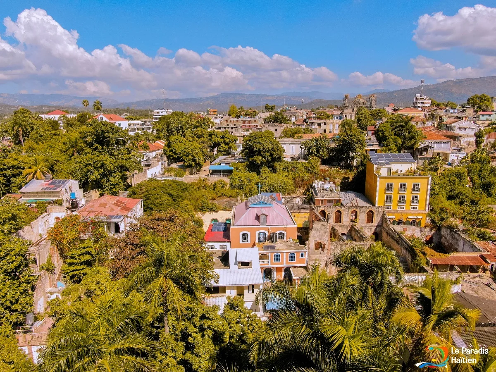

Situation géographique de Jacmel

La commune de Jacmel est située sur la côte sud de la péninsule méridionale d'Haïti. Elle est le chef-lieu du département du Sud-Est et de l'arrondissement de Jacmel. Elle est limitée :
- Au nord par les communes de La Vallée-de-Jacmel et Marigot ;
- À l'est par la commune de Marigot ;
- À l'ouest par la commune de Cayes-Jacmel ;
- Au sud par la mer des Caraïbes.
Jacmel est située à environ 100 km au sud-est de Port-au-Prince. Son emplacement côtier, son port, son patrimoine historique et son riche héritage culturel en font l'une des villes les plus importantes du sud d'Haïti, reconnue notamment pour son carnaval, son artisanat et ses plages.
La ville de Jacmel est également connue pour son architecture coloniale, ses maisons en fer forgé et son célèbre carnaval qui attire des milliers de visiteurs chaque année. Son patrimoine culturel unique en fait une destination incontournable pour les amoureux d'art et d'histoire. Le Bassin Bleu, ses plages de sable fin et son ambiance festive font de Jacmel un lieu de villégiature prisé par les Haïtiens et les touristes étrangers.
Fondée en 1698, Jacmel est l'une des plus anciennes villes d'Haïti. Son port naturel a fait d'elle un important centre commercial pour l'exportation du café, du cacao et de la canne à sucre. Aujourd'hui, elle continue d'attirer les visiteurs par son charme authentique et sa richesse culturelle.